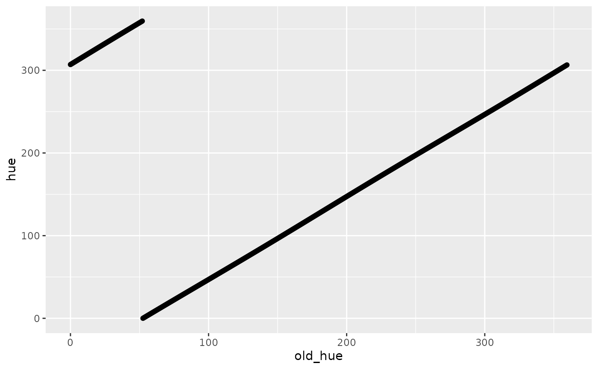

Color Schemes
Color-Schemes.RmdBackground
This vignette walks through creating the color scheme for flowfieldfigments. It will cover the setup, adjustments, and comparison to a base color scheme followed by subsetting. These steps result in creating the get_color and get_color_subset functions.
The color scheme for this project needs to span all hues and stretch from gray to higher saturation while keeping the saturation somewhat even across hue values. In addition to this, the flow field paths determine their colors by their starting directions and lengths. We’ll use the HCL color space because of its hue, chroma, and luminance parameters. Hue and chroma will span all colors and stretch from gray to higher saturation. In addition, a path’s starting direction can map to hue and length to chroma. So most of the main requirements are met, and now the details need to be determined.
Setup
We need to enforce the evenness of chroma across hue values. So, we’ll design a disk centered at 0 chroma and 0 hue, then try to stretch it out to maximize its width. The following code retrieves the max chroma value across hues. We can see the odd shape from the top view and the range of luminance values from the side views. Notice that 0 chroma and 0 hue are not in the center, and the ring of points does not form a flat plane.
library(tidyverse)
library(colorspace)
# Set up all the max chromas
hue <- seq(0, 359.5, .5)
luminance <- seq(0, 100, .5)
max_chroma_luminance <- function(h) {
mc <- max_chroma(h, l = seq(0, 100, .5))
ml <- seq(0, 100, .5)[mc == max(mc)]
data.frame(
hue = h,
chroma = max(mc),
luminance = ml
)
}
df <- map_dfr(hue, max_chroma_luminance)
df <- df %>%
mutate(
x = chroma * cos(hue * pi / 180),
y = chroma * sin(hue * pi / 180),
hex_color = hcl(hue, chroma, luminance)
)
ggplot(
data = df,
aes(x, y, color = hex_color)
) +
geom_point() +
scale_color_identity() +
coord_equal()Top View
df <- df %>%
arrange(-y)
ggplot(
data = df,
aes(x, luminance,
color = hex_color
)
) +
geom_point() +
scale_color_identity() +
scale_y_continuous(limits = c(0, 100)) +
coord_equal()Side View 1
df <- df %>%
arrange(x)
ggplot(
data = df,
aes(y, luminance,
color = hex_color
)
) +
geom_point() +
scale_color_identity() +
scale_y_continuous(limits = c(0, 100)) +
coord_equal()Side View 2
To get a flat plane, we’ll use PCA. This technique will balance out the odd shape of the max chromas. (Other techniques could produce satisfying results, too, like regression or optimization.) We’ll use the PCA loadings to construct a function, luminance_function, that takes the x and y values to return the luminance values for the plane. Combining this function with a lot of hue/chroma combinations will give us the maximum size of the disk.
# Use PCA to get a plane
df_pca <- df %>%
select(
-hex_color,
-hue,
-chroma
) %>%
relocate(x, y, luminance)
pca <- princomp(df_pca)
# Work out a*x + b*y + c*luminance = d
comp3 <- as.vector(pca$loadings)[7:9]
a <- comp3[1]
b <- comp3[2]
c <- comp3[3]
d <- comp3[1] * mean(df_pca$x) +
comp3[2] * mean(df_pca$y) +
comp3[3] * mean(df_pca$luminance)
# Solve for luminance given x, y
luminance_function <- function(x, y) {
(d - x * a - y * b) / c
}
# Test
luminance_function(0, 0)
#> [1] 74.84433
# Get max chroma
max_dist <- expand_grid(
hue = seq(0, 360, .5),
chroma = seq(0, 180)
) %>%
mutate(
x = chroma * cos(hue * pi / 180),
y = chroma * sin(hue * pi / 180)
) %>%
rowwise() %>%
mutate(luminance = luminance_function(x, y)) %>%
filter(luminance <= 100) %>%
mutate(hex_color = hcl(hue, chroma, luminance, fixup = FALSE)) %>%
filter(!is.na(hex_color)) %>%
mutate(base_lum = luminance_function(0, 0)) %>%
mutate(
dist = sqrt(x^2 + y^2 + (luminance - base_lum)^2),
hue_round = round(hue)
) %>% # base_x, base_y = 0
group_by(hue_round) %>%
mutate(max_dist = max(dist)) %>%
ungroup() %>%
summarize(floor(min(max_dist))) %>%
pull()
max_dist
#> [1] 63So now we have the plane and max size, 63 as max_dist, for the disk. We can wrap it up as a function to see how it looks. We’ll use the PCA loadings again to convert hue values to the right direction. We can see that this circle is centered at (0, 0), stretches to the edges, and tilted with the max chroma ring. The max chroma shape and this circle don’t connect as the circle hits the edge of the HCL color space hull.
v1 <- pca$loadings[c(1, 2, 3)]
v1 <- v1 / sqrt(sum(v1^2))
v2 <- pca$loadings[c(4, 5, 6)]
v2 <- v2 / sqrt(sum(v2^2))
v3 <- pca$loadings[c(7, 8, 9)]
v3 <- v3 / sqrt(sum(v3^2))
p <- c(0, 0, luminance_function(0, 0))
get_values <- function(hue) {
v <- p +
max_dist * cos(hue * pi / 180) * v1 +
max_dist * sin(hue * pi / 180) * v2
data.frame(
x = v[1],
y = v[2],
luminance = v[3],
old_hue = hue
)
}
df_circle <- map_dfr(hue, get_values) %>%
mutate(
hue = (atan2(y, x) * 180 / pi) %% 360,
chroma = sqrt(x^2 + y^2)
) %>%
mutate(hex_color = hcl(hue, chroma, luminance, fixup = FALSE))
df_total <- df_circle %>%
select(-old_hue) %>%
rbind(df) %>%
arrange(-luminance)
ggplot() +
geom_point(
data = df_total,
aes(x, y, color = hex_color)
) +
geom_point() +
scale_color_identity() +
coord_equal()Top View
df_total <- df_total %>%
arrange(-y)
ggplot() +
geom_point(
data = df_total,
aes(x, luminance,
color = hex_color
)
) +
scale_color_identity() +
scale_y_continuous(limits = c(0, 100)) +
coord_equal()Side View 1
df_total <- df_total %>%
arrange(x)
ggplot() +
geom_point(
data = df_total,
aes(y, luminance,
color = hex_color
)
) +
scale_color_identity() +
scale_y_continuous(limits = c(0, 100)) +
coord_equal()Side View 2
Adjustments
One aspect of this setup that I don’t like is that the hue values for this function are a little off from matching up 0 to 0. Everything gets slightly turned during the process because of the vectors we used. So, we can rotate these vectors to have 0 as the hue input return 0 for the hue output. This action doesn’t do anything for the final results, but makes debugging a little easier because the colors will line up as expected.
ggplot(data = df_circle, aes(
x = old_hue,
y = hue
)) +
geom_point()
# Now fix so hue = 0 returns hue = 0
# hue = 0
# means y = 0
# means v[2] = 0
# means p[2] + chroma * cos(0) * v1[2] + chroma * sin(0) * v2[2] = 0
# p[2] = 0, sin(0) = 0
# just need v1[2] to be 0
# got center of circle, p
# need point on circle where y = 0, x is positive
p <- c(0, 0, luminance_function(0, 0))
i_vector <- c(1, 0, luminance_function(1, 0))
i_vector <- (i_vector - p) / sqrt(sum((i_vector - p)^2))
j_vector <- c(
v3[2] * i_vector[3] - v3[3] * i_vector[2],
v3[3] * i_vector[1] - v3[1] * i_vector[3],
v3[1] * i_vector[2] - v3[2] * i_vector[1]
)
# These are the magic numbers in the get_color function
i_vector
#> [1] 0.9925801 0.0000000 -0.1215926
j_vector
#> [1] 0.01725933 0.98987471 0.14089068
p
#> [1] 0.00000 0.00000 74.84433These vectors are where we get the magic numbers for the get_color function in the package.
get_color <- function(angle, percentage) {
vectors <- data.frame(
v1 = c(
0.99258009214842,
0,
-0.121592601216663
),
v2 = c(
0.0172593263893888,
0.989874705747223,
0.14089067596698
),
p = c(
0,
0,
74.8443331534229
)
)
v <- vectors[["p"]] +
(percentage / 100 * 63) * cos(angle * pi / 180) * vectors[["v1"]] +
(percentage / 100 * 63) * sin(angle * pi / 180) * vectors[["v2"]]
hue <- (atan2(v[2], v[1]) * 180 / pi) %% 360
chroma <- sqrt(v[1]^2 + v[2]^2)
luminance <- v[3]
grDevices::hcl(hue, chroma, luminance, fixup = FALSE)
}I want to take a moment to double-check the distances around the disk. There should be a maximum of 63 for all hue values. Running along hue values, getting the color, converting to HCL, then x-y, and finally, the distance to the center shows the edge values around 63. It’s not precisely 63 because the color space conversions jitter everything, but it is close enough. This exercise indicates that the disk is tilted, not that the values keep the same chroma and hue but change luminance.
circle_check <- data.frame(angle = seq(0, 360, .5)) %>%
mutate(percentage = 100) %>%
rowwise() %>%
mutate(hex_color = get_color(angle, percentage)) %>%
mutate(
L = coords(as(hex2RGB(hex_color), "polarLUV"))[, 1],
C = coords(as(hex2RGB(hex_color), "polarLUV"))[, 2],
H = coords(as(hex2RGB(hex_color), "polarLUV"))[, 3]
) %>%
mutate(
hex_color_2 = hcl(H, C, L),
x = C * cos(H * pi / 180),
y = C * sin(H * pi / 180)
) %>%
mutate(distance = sqrt(x^2 + y^2 + (L - 74.8443331534229)^2))
ggplot(
data = circle_check,
aes(x, y, color = distance)
) +
geom_point() +
coord_equal() +
theme(legend.position = "bottom")Circle Check Distances
ggplot(
data = circle_check,
aes(x, y, color = hex_color)
) +
geom_point() +
coord_equal() +
scale_color_identity()Circle Check Colors
Comparison
The last task for this section is to compare against using a flat luminance value. Basically, instead of all this work, what would be the difference with just using a flat disk. We can pick the base luminance value of 78.844, get_color(0, 0).
golden <- ((sqrt(5) + 1) / 2) * (2 * pi)
size <- 10000
color_scheme_points <- data.frame(
x = sqrt(seq(1, size)) * cos(golden * seq(1, size)) * 2.5,
y = sqrt(seq(1, size)) * sin(golden * seq(1, size)) * 2.5
) %>%
mutate(
angle = atan2(y, x) * 180 / pi,
distance = sqrt(x^2 + y^2)
) %>%
mutate(percentage = distance / max(distance) * 100) %>%
rowwise() %>%
mutate(hex_color = get_color(angle, percentage))
flat_luminance_points <- data.frame(
x = sqrt(seq(1, size)) * cos(golden * seq(1, size)) * 2.5,
y = sqrt(seq(1, size)) * sin(golden * seq(1, size)) * 2.5
) %>%
mutate(
angle = atan2(y, x) * 180 / pi,
distance = sqrt(x^2 + y^2)
) %>%
mutate(percentage = distance / max(distance) * 100) %>%
rowwise() %>%
mutate(hex_color = hcl(
h = angle,
c = percentage / 100 * 63,
l = 74.8443331534229,
fixup = FALSE
)) %>%
filter(!is.na(hex_color))
ggplot() +
geom_point(
data = color_scheme_points,
aes(x, y,
color = hex_color
)
) +
scale_color_identity() +
coord_equal() +
theme_void()Color Scheme
ggplot() +
geom_point(
data = flat_luminance_points,
aes(x, y,
color = hex_color
)
) +
scale_color_identity() +
coord_equal() +
theme_void()Flat Luminance
The noticeable differences are:
- Brighter greens and yellows
- Darker violets
- The disk extends out to the full value
We can compute the difference between using the color scheme versus flat luminance outputs for the same inputs. The graph shows the direction and magnitude of the disk’s tilt. The areas with the most considerable differences here match the most considerable differences in the last two charts.
compare_points <- data.frame(
x = sqrt(seq(1, size)) *
cos(golden * seq(1, size)) * 2.5,
y = sqrt(seq(1, size)) *
sin(golden * seq(1, size)) * 2.5
) %>%
mutate(
angle = atan2(y, x) * 180 / pi,
distance = sqrt(x^2 + y^2)
) %>%
mutate(percentage = distance / max(distance) * 100) %>%
rowwise() %>%
mutate(hex_color_cs = get_color(angle, percentage)) %>%
mutate(hex_color_fl = hcl(
h = angle,
c = percentage / 100 * 63,
l = 74.8443331534229,
fixup = FALSE
)) %>%
filter(!is.na(hex_color_fl)) %>%
mutate(
L_cs = coords(as(hex2RGB(hex_color_cs), "polarLUV"))[, 1],
C_cs = coords(as(hex2RGB(hex_color_cs), "polarLUV"))[, 2],
H_cs = coords(as(hex2RGB(hex_color_cs), "polarLUV"))[, 3],
L_fl = coords(as(hex2RGB(hex_color_fl), "polarLUV"))[, 1],
C_fl = coords(as(hex2RGB(hex_color_fl), "polarLUV"))[, 2],
H_fl = coords(as(hex2RGB(hex_color_fl), "polarLUV"))[, 3]
) %>%
mutate(
x_cs = C_cs * cos(H_cs * pi / 180),
y_cs = C_cs * sin(H_cs * pi / 180),
x_fl = C_fl * cos(H_fl * pi / 180),
y_fl = C_fl * sin(H_fl * pi / 180)
) %>%
mutate(difference = sign(L_cs - L_fl) * sqrt((x_cs - x_fl)^2 +
(y_cs - y_fl)^2 +
(L_cs - L_fl)^2))
ggplot(
data = compare_points,
aes(x, y, color = difference)
) +
geom_point() +
coord_equal() +
theme(legend.position = "bottom")Difference Comparison
Subsetting
To finish this vignette, we only need to cover the get_color_subset function. This function warps the standard input of get_color to output a subset of continuous hue values. It transforms the hue angle to centered on center and bounded by center - width and center + width. As hue moves from 0 to 360, output colors start at the center, move along to center + width, turn back to center, move to center - width, then finally back to center.
get_color_subset <- function(center, width, angle, percentage) {
get_color(width * sin(angle * pi / 180) + center, percentage)
}
size <- 10000
points <- data.frame(
x = sqrt(seq(1, size)) * cos(golden * seq(1, size)) * 2.5,
y = sqrt(seq(1, size)) * sin(golden * seq(1, size)) * 2.5
) %>%
mutate(id = row_number()) %>%
mutate(
percentage = sqrt(x^2 + y^2),
angle = atan2(y, x) * 180 / pi
) %>%
mutate(percentage = percentage / max(percentage) * 100) %>%
rowwise() %>%
mutate(hex_color = get_color_subset(0, 30, angle, percentage))
ggplot(
data = points,
aes(x, y, color = hex_color)
) +
geom_point() +
scale_color_identity() +
coord_equal() +
theme_void()Color Scheme Subset
Changing the center and width parameters can move the colors around the color wheel and shrink or expand the range of colors. Because the output is a continuous set, all the subset colors are next to each other on the color wheel.
points <- points %>%
mutate(
hex_color =
get_color_subset(
0,
90,
angle,
percentage
)
)
ggplot(
data = points,
aes(x, y, color = hex_color)
) +
geom_point() +
scale_color_identity() +
coord_equal() +
theme_void()Larger Angle
points <- points %>%
mutate(
hex_color =
get_color_subset(
180,
60,
angle,
percentage
)
)
ggplot(
data = points,
aes(x, y, color = hex_color)
) +
geom_point() +
scale_color_identity() +
coord_equal() +
theme_void()Hue Change